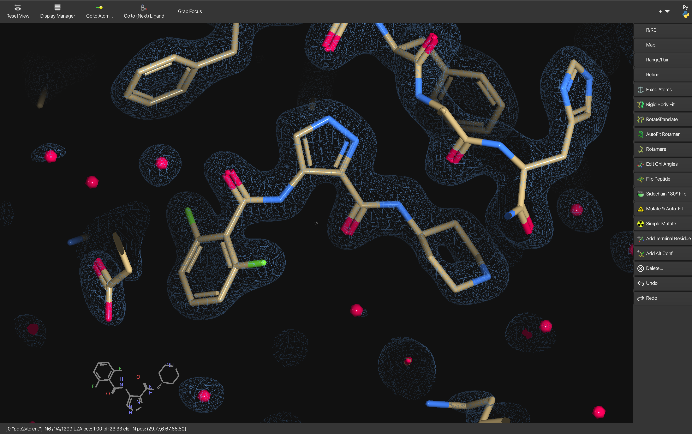

Coot

Is this the "Official Home of Coot"?
Yes - welcome!
What does Coot stand for?
Crystallographic Object-Oriented Toolkit
What does it do?
Coot is for macromolecular model building, model completion and validation, particularly suitable for protein modelling using X-ray data. Coot displays maps and models and allows model manipulations such as:
- idealization
- real space refinement
- manual rotation/translation
- rigid-body fitting
- ligand search
- solvation
- mutations
- rotamers
- Ramachandran plots
- skeletonization
- non-crystallographic symmetry
These days it is useful for cryo-EM data and models, too.
What's the latest stable release?
Gtk+2: 0.9.8.95
GTK4: 1.1.10
Where are the release binaries?
Binaries for Coot 1.1.x are not available for as many platforms as I would like at the moment :
https://www2.mrc-lmb.cam.ac.uk/personal/pemsley/coot/binaries/release/
Go the the bottom of the list for the newest release. It is (or will be) part of the operating system for Debian and Ubuntu - so you can use apt to install it.
And thanks to Yoshitaka Moriwaki you can install it from homebrew on a Mac.
For Coot 1.1.x installation, visit: https://github.com/pemsley/coot
What's it like?
Coot has some features that resemble those of Frodo, O, Quanta, and XtalView’s XFit. Or perhaps PyMOL or ChimeraX. It is much better at graphics than it used to be.
To be clear, it is completely independent of any of the above software. Coot can now handle many aspects of structure representation, such as ribbons or sophisticated coloring schemes.
Coot is under active development. New features are being added regularly.
Moorhen is the sister project to Coot: "Coot on the Web" you might call it - although it has grown in scope since the first year and is now capable of making some attractive-looking publication quality images also. If that is of interest, you can try it out at moorhen.org.
More info about Moorhen: https://github.com/moorhen-coot/Moorhen
Is there a Coot FAQ?
Yes.
Is there a Coot Mailing list?
There is a Coot mailing list now hosted by the jiscmail service :
http://www.jiscmail.ac.uk/lists/coot.html
Is there Coot documentation?
Some presentations:
- The 2025 CCP4 Study Weekend Coot and Moorhen presentation can be found here.
- The 2012 ACA Coot Basics can be found here.
- The 2012 ACA Coot Extras can be found here.
- The 2010 CCP4 Study weekend presentation can be found here.
How do I cite Coot?
Please see the FAQ. Get the paper.
I like to spell Coot with a capital "C" and lower-case "oot", with italics. I am not dogmatic about it.
OK, how does it look?
Like this:

Hmm... very pretty. Any other pics?
Try here.
Does it work with a white background?
Yes. You can make nice-looking density figures now. See for example the figures in the "Neutron crystallographic refinement with REFMAC5 from the CCP4 suite" - Catapano et al. (2023).
What formats?
PDB, mmCIF, MTZ files, .phs and others.
It makes maps from MTZ and .phs files?
Yes.
Can it read conventional CCP4 maps?
Yes.
Can it read any other kind of map?
Yes, it can read CNS maps.
Is it scriptable?
Yep, hundreds of functions are made available to the user via SWIG and can be scripted in either Python or scheme.
The modern Pythonic interface to libcootapi is called chapi. Chapi documentation can be found here.
Where do I get it?
See the sidebar.
Which binary should I use? See the FAQ.
How do I install it?
Read the README in the source tar file.
What libraries do I need?
- fftw
- mmdb
- ccp4c
- clipper
- guile or Python
- glib
- GTK+-2 and gdk
- pthread
- gtkglext
- gnome-canvas
- zlib
- GSL
- GL
- GLU
- glut
Errg. Sounds complicated.
Yes, it is a bit. Binary distributions for a selection of systems are built every night.
There is an "autobuilder" build script which we use to make build the binaries.
I should add that Coot depends on many other projects, some general (GTK+, the GNU Scientific Library, python, guile, GL graphics libraries and toolkits) and others more specific to structural biology (mmdb, clipper) which are fundamental to the design and implementation of the program.
What is the licence?
Mostly GPLv3, some GLPv2+, some LGPLv3.
So I can just download it and use it, no questions asked?
Yep. Be my guest.
Even if I'm part of a Big Pharma?
Yes.
On which platforms does it run?
Certainly on Ubuntu, Fedora, RedHat Enterprise Linux, Microsoft Windows, MacOS X.
You can get WinCoot here.
Getting the Coot binaries to run on RHEL, or SuSe might take a bit more effort. Please see the Coot FAQ.
Not to be confused with:
Alwyn Jones' O, Quanta, XtalView, CCP4mg.
What is the Coot holding in its beak, by the way?
It's biting off the gamma phosphate of an ATP.
And that's supposed to be an allusion to a biochemical process, is it?
Err.. yes.
Most likely to say:
"Now how does that Refmac button work again..?"
Least likely to say:
"On reflection, it'd have been much better to implement using Tcl/Tk."
Author: Paul Emsley Date: February 22, 2025